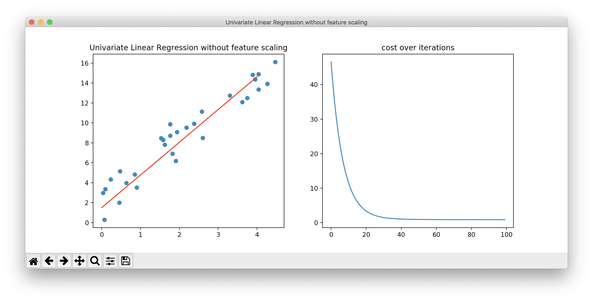

<!DOCTYPE html>


  


<html class="theme-next mist use-motion" lang="en">
<head><meta name="generator" content="Hexo 3.8.0">
  <!-- hexo-inject:begin --><!-- hexo-inject:end --><meta charset="UTF-8">
<meta http-equiv="X-UA-Compatible" content="IE=edge">
<meta name="viewport" content="width=device-width, initial-scale=1, maximum-scale=1">
<meta name="theme-color" content="#222">
<meta name="google-site-verification" content="Mxm9E-j9Gv7WuZQYUJ6BytlCEOcioYX-OQuCqPdBp6I">


<meta http-equiv="Cache-Control" content="no-transform">
<meta http-equiv="Cache-Control" content="no-siteapp">


  
  
  <link href="/lib/fancybox/source/jquery.fancybox.css?v=2.1.5" rel="stylesheet" type="text/css">


  
  
  
  

  
    
    
  

  

  

  

  

  
    
    
    <link href="//fonts.googleapis.com/css?family=Lato:300,300italic,400,400italic,700,700italic&subset=latin,latin-ext" rel="stylesheet" type="text/css">
  


<link href="/lib/font-awesome/css/font-awesome.min.css?v=4.6.2" rel="stylesheet" type="text/css">

<link href="/css/main.css?v=5.1.2" rel="stylesheet" type="text/css">


  <meta name="keywords" content="Python,Machine Learning,">


  <link rel="shortcut icon" type="image/x-icon" href="/images/favicon.ico?v=5.1.2">


<meta name="description" content="Linear Regression 簡介 假設我們有 $m$ 筆資料，每筆資料都包含 $n$ 個特徵，記為 $x$，每筆資料都有 1 個正確答案，記為 $y$。若給我們一筆新的資料，我們希望預測這筆資料的正確答案。 $x$ 與 $y$ 之間可能存在著某種關聯性 $f$，使得 $y=f(x)$，但我們不知道這個 $f$ 是什麼，因此我們希望利用這些現存的資料找出一個 $h(x)$，使得 $">
<meta name="keywords" content="Python,Machine Learning">
<meta property="og:type" content="article">
<meta property="og:title" content="機器學習經典演算法實作 - Linear Regression">
<meta property="og:url" content="https://p61402.github.io/2019/06/12/機器學習經典演算法實作-Linear-Regression/index.html">
<meta property="og:site_name" content="QOO&#39;s Blog">
<meta property="og:description" content="Linear Regression 簡介 假設我們有 $m$ 筆資料，每筆資料都包含 $n$ 個特徵，記為 $x$，每筆資料都有 1 個正確答案，記為 $y$。若給我們一筆新的資料，我們希望預測這筆資料的正確答案。 $x$ 與 $y$ 之間可能存在著某種關聯性 $f$，使得 $y=f(x)$，但我們不知道這個 $f$ 是什麼，因此我們希望利用這些現存的資料找出一個 $h(x)$，使得 $">
<meta property="og:locale" content="en">
<meta property="og:image" content="https://p61402.github.io/2019/06/12/機器學習經典演算法實作-Linear-Regression/data_distribution.png">
<meta property="og:image" content="https://p61402.github.io/2019/06/12/機器學習經典演算法實作-Linear-Regression/test1.png">
<meta property="og:image" content="https://p61402.github.io/2019/06/12/機器學習經典演算法實作-Linear-Regression/test2.png">
<meta property="og:image" content="https://p61402.github.io/2019/06/12/機器學習經典演算法實作-Linear-Regression/normal_equation.png">
<meta property="og:image" content="https://p61402.github.io/2019/06/12/機器學習經典演算法實作-Linear-Regression/test3.png">
<meta property="og:image" content="https://p61402.github.io/2019/06/12/機器學習經典演算法實作-Linear-Regression/test4.png">
<meta property="og:updated_time" content="2019-06-15T18:38:13.862Z">
<meta name="twitter:card" content="summary">
<meta name="twitter:title" content="機器學習經典演算法實作 - Linear Regression">
<meta name="twitter:description" content="Linear Regression 簡介 假設我們有 $m$ 筆資料，每筆資料都包含 $n$ 個特徵，記為 $x$，每筆資料都有 1 個正確答案，記為 $y$。若給我們一筆新的資料，我們希望預測這筆資料的正確答案。 $x$ 與 $y$ 之間可能存在著某種關聯性 $f$，使得 $y=f(x)$，但我們不知道這個 $f$ 是什麼，因此我們希望利用這些現存的資料找出一個 $h(x)$，使得 $">
<meta name="twitter:image" content="https://p61402.github.io/2019/06/12/機器學習經典演算法實作-Linear-Regression/data_distribution.png">


<script type="text/javascript" id="hexo.configurations">
  var NexT = window.NexT || {};
  var CONFIG = {
    root: '/',
    scheme: 'Mist',
    sidebar: {"position":"left","display":"post","offset":12,"offset_float":12,"b2t":false,"scrollpercent":false,"onmobile":false},
    fancybox: true,
    tabs: true,
    motion: true,
    duoshuo: {
      userId: '0',
      author: 'Author'
    },
    algolia: {
      applicationID: '',
      apiKey: '',
      indexName: '',
      hits: {"per_page":10},
      labels: {"input_placeholder":"Search for Posts","hits_empty":"We didn't find any results for the search: ${query}","hits_stats":"${hits} results found in ${time} ms"}
    }
  };
</script>


  <link rel="canonical" href="https://p61402.github.io/2019/06/12/機器學習經典演算法實作-Linear-Regression/">


  <title>機器學習經典演算法實作 - Linear Regression | QOO's Blog</title><!-- hexo-inject:begin --><!-- hexo-inject:end -->
  


</head>

<body itemscope itemtype="http://schema.org/WebPage" lang="en">

  
  
    
  

  <!-- hexo-inject:begin --><!-- hexo-inject:end --><div class="container sidebar-position-left page-post-detail ">
    <div class="headband"></div>

    <header id="header" class="header" itemscope itemtype="http://schema.org/WPHeader">
      <div class="header-inner"><div class="site-brand-wrapper">
  <div class="site-meta ">
    

    <div class="custom-logo-site-title">
      <a href="/" class="brand" rel="start">
        <span class="logo-line-before"><i></i></span>
        <span class="site-title">QOO's Blog</span>
        <span class="logo-line-after"><i></i></span>
      </a>
    </div>
      
        <h1 class="site-subtitle" itemprop="description"></h1>
      
  </div>

  <div class="site-nav-toggle">
    <button>
      <span class="btn-bar"></span>
      <span class="btn-bar"></span>
      <span class="btn-bar"></span>
    </button>
  </div>
</div>

<nav class="site-nav">
  

  
    <ul id="menu" class="menu">
      
        
        <li class="menu-item menu-item-home">
          <a href="/" rel="section">
            
              <i class="menu-item-icon fa fa-fw fa-home"></i> <br>
            
            Home
          </a>
        </li>
      
        
        <li class="menu-item menu-item-categories">
          <a href="/categories/" rel="section">
            
              <i class="menu-item-icon fa fa-fw fa-th"></i> <br>
            
            Categories
          </a>
        </li>
      
        
        <li class="menu-item menu-item-archives">
          <a href="/archives/" rel="section">
            
              <i class="menu-item-icon fa fa-fw fa-archive"></i> <br>
            
            Archives
          </a>
        </li>
      
        
        <li class="menu-item menu-item-tags">
          <a href="/tags/" rel="section">
            
              <i class="menu-item-icon fa fa-fw fa-tags"></i> <br>
            
            Tags
          </a>
        </li>
      

      
        <li class="menu-item menu-item-search">
          
            <a href="javascript:;" class="popup-trigger">
          
            
              <i class="menu-item-icon fa fa-search fa-fw"></i> <br>
            
            Search
          </a>
        </li>
      
    </ul>
  

  
    <div class="site-search">
      
  <div class="popup search-popup local-search-popup">
  <div class="local-search-header clearfix">
    <span class="search-icon">
      <i class="fa fa-search"></i>
    </span>
    <span class="popup-btn-close">
      <i class="fa fa-times-circle"></i>
    </span>
    <div class="local-search-input-wrapper">
      <input autocomplete="off" placeholder="Searching..." spellcheck="false" type="text" id="local-search-input">
    </div>
  </div>
  <div id="local-search-result"></div>
</div>


    </div>
  
</nav>


 </div>
    </header>

    <main id="main" class="main">
      <div class="main-inner">
        <div class="content-wrap">
          <div id="content" class="content">
            

  <div id="posts" class="posts-expand">
    

  

  
  
  

  <article class="post post-type-normal" itemscope itemtype="http://schema.org/Article">
  
  
  
  <div class="post-block">
    <link itemprop="mainEntityOfPage" href="https://p61402.github.io/2019/06/12/機器學習經典演算法實作-Linear-Regression/">

    <span hidden itemprop="author" itemscope itemtype="http://schema.org/Person">
      <meta itemprop="name" content="QOO">
      <meta itemprop="description" content>
      <meta itemprop="image" content="/images/avatar.gif">
    </span>

    <span hidden itemprop="publisher" itemscope itemtype="http://schema.org/Organization">
      <meta itemprop="name" content="QOO's Blog">
    </span>

    
      <header class="post-header">

        
        
          <h2 class="post-title" itemprop="name headline">機器學習經典演算法實作 - Linear Regression</h2>
        

        <div class="post-meta">
          <span class="post-time">
            
              <span class="post-meta-item-icon">
                <i class="fa fa-calendar-o"></i>
              </span>
              
                <span class="post-meta-item-text">Posted on</span>
              
              <time title="Post created" itemprop="dateCreated datePublished" datetime="2019-06-12T22:56:48+08:00">
                2019-06-12
              </time>
            

            

            
          </span>

          
            <span class="post-category">
            
              <span class="post-meta-divider">|</span>
            
              <span class="post-meta-item-icon">
                <i class="fa fa-folder-o"></i>
              </span>
              
                <span class="post-meta-item-text">In</span>
              
              
                <span itemprop="about" itemscope itemtype="http://schema.org/Thing">
                  <a href="/categories/機器學習/" itemprop="url" rel="index">
                    <span itemprop="name">機器學習</span>
                  </a>
                </span>

                
                
              
            </span>
          

          
            
          

          
          

          
            <span class="post-meta-divider">|</span>
            <span class="page-pv"><i class="fa fa-eye"></i>
            <span class="busuanzi-value" id="busuanzi_value_page_pv"></span>
            </span>
          

          

          

        </div>
      </header>
    

    
    
    
    <div class="post-body" itemprop="articleBody">

      
      

      
        <h1>Linear Regression 簡介</h1>
<p>假設我們有 $m$ 筆資料，每筆資料都包含 $n$ 個特徵，記為 $x$，每筆資料都有 1 個正確答案，記為 $y$。若給我們一筆新的資料，我們希望預測這筆資料的正確答案。</p>
<p>$x$ 與 $y$ 之間可能存在著某種關聯性 $f$，使得 $y=f(x)$，但我們不知道這個 $f$ 是什麼，因此我們希望利用這些現存的資料找出一個 $h(x)$，使得 $h$ 越接近 $f$ 越好。</p>
<a id="more"></a>
<h2 id="model-representation"><a class="header-anchor" href="#model-representation">¶</a>Model Representation</h2>
<p>Linear Regression (線性迴歸) 就是找出一條直線，使得這條線能夠盡可能的擬合所有的訓練資料。</p>
<p>$$h_\theta(x)=\theta_0+\theta_1 x_1+\theta_2 x_2+…+\theta_n x_n$$</p>
<p>$\theta$ 是這條直線的係數，也是我們要想辦法計算出來的，這個模型的參數。</p>
<p>那麼假設我們找到了一組參數，我們要如何保證在給定這組參數的情況下，模型能夠準確地用來表示這些資料呢？</p>
<h2 id="cost-function"><a class="header-anchor" href="#cost-function">¶</a>Cost Function</h2>
<p>我們希望資料透過這個模型的計算得出來的結果，與實際的值誤差越小越好，因此我們可以採用 Mean Square Error (MSE) 來計算誤差。</p>
<p>而這個誤差我們稱為 cost function (代價函數)，有些人稱作 loss function (損失函數) 或 objective function (目標函數)，其實指的都是同個意思。</p>
<p>下方的式子就是我們使用的 cost function：</p>
<p>$$J(\theta)=\frac{1}{2m}\sum_{i=1}<sup>m(h_\theta(x</sup>{(i)})-y<sup>{(i)})</sup>2$$</p>
<p>這裡有一點需要注意的是，我們多除了一個 $2$，這是因為待會的步驟要計算這個 cost function 的微分，微分時平方項會變成 $\times2$，剛好可以與多除的 $2$ 抵銷掉，因此能夠減少計算量。</p>
<h2 id="gradient-descent"><a class="header-anchor" href="#gradient-descent">¶</a>Gradient Descent</h2>
<p>既然我們有了一個 cost function 能夠衡量一組參數的好壞，那我們剩下要做的事情就是想辦法找到一組最好的參數使得 cost function 最小。</p>
<p>我們當然可以用暴力法一一嘗試各種參數的組合，但是這個有點方法不切實際，因為我們不知道參數的範圍在哪裡，同時這個方法的效率也相當差。</p>
<p>我們可以用 Gradient Descent 來逐步更新參數：</p>
<p>$$\theta_j:=\theta_j-\alpha\frac{\partial}{\partial \theta_j}J(\theta)$$</p>
<p>$\dfrac{\partial}{\partial \theta_j}J(\theta)$ 是 cost function 對參數 $\theta_j$ 的偏微分，代表這一點的梯度方向，而由於梯度方向是指向高點，而我們要尋找的是 cost function 的最小值，所以我們會在這一項前面加上一個負號。</p>
<p>我們將這個梯度乘上一個 learning rate $\alpha$，這個值通常小於 1，因為我們希望每次參數更新的幅度不要太大，才能夠緩慢的收斂至極值，不過若 learning rate 過小也容易導致收斂在 local optimal。</p>
<p>而 gradient 的計算如下：</p>
<p>$$\dfrac{\partial}{\partial \theta_j}J(\theta)=\dfrac{1}{m}\sum_{i=1}<sup>m(h_\theta(x</sup>{(i)})-y<sup>{(i)})x_j</sup>{(i)}$$</p>
<h2 id="feature-scaling"><a class="header-anchor" href="#feature-scaling">¶</a>Feature Scaling</h2>
<p>若不同 feature 的範圍差距過大，在 gradient descent 的時候收斂的速度會較慢，這時我們可以將 feature 進行正規化，例如將特徵規範在 -1 到 1 之間。</p>
<p>而正規化的方法有很多種，這裡我們使用的是 Mean Normalization：</p>
<p>$$x_i=\dfrac{x_i-\mu_i}{s_i}$$</p>
<p>其中 $s_i=x_{max}-x_{min}$，結果會使得 $-1\leq x_i\leq1$，並且 mean = 0。</p>
<h2 id="normal-equation"><a class="header-anchor" href="#normal-equation">¶</a>Normal Equation</h2>
<p>除了用 gradient descent 之外，也可以使用 Normal Equation，這個方法能夠直接得出最佳的 $\theta$ 值，這邊我們僅列出式子，不探討其背後的原理。</p>
<p>$$\theta=(X<sup>TX)</sup>{-1}X^Ty$$</p>
<h1>實作</h1>
<p>載入我們唯一需要用到的函式庫：<code>numpy</code>。</p>
<figure class="highlight python"><table><tr><td class="gutter"><pre><span class="line">1</span><br></pre></td><td class="code"><pre><span class="line"><span class="keyword">import</span> numpy <span class="keyword">as</span> np</span><br></pre></td></tr></table></figure>
<p>定義一個類別及所需的變數：</p>
<figure class="highlight python"><table><tr><td class="gutter"><pre><span class="line">1</span><br><span class="line">2</span><br><span class="line">3</span><br><span class="line">4</span><br><span class="line">5</span><br><span class="line">6</span><br><span class="line">7</span><br><span class="line">8</span><br><span class="line">9</span><br></pre></td><td class="code"><pre><span class="line"><span class="class"><span class="keyword">class</span> <span class="title">LinearRegression</span><span class="params">()</span>:</span></span><br><span class="line">    <span class="function"><span class="keyword">def</span> <span class="title">__init__</span><span class="params">(self, num_iteration=<span class="number">100</span>, learning_rate=<span class="number">1e-1</span>, feature_scaling=True)</span>:</span></span><br><span class="line">        self.num_iteration = num_iteration</span><br><span class="line">        self.learning_rate = learning_rate</span><br><span class="line">        self.feature_scaling = feature_scaling</span><br><span class="line">        self.M = <span class="number">0</span> <span class="comment"># normalize mean</span></span><br><span class="line">        self.S = <span class="number">1</span> <span class="comment"># normalize range</span></span><br><span class="line">        self.W = <span class="keyword">None</span></span><br><span class="line">        self.cost_history = np.empty(num_iteration)</span><br></pre></td></tr></table></figure>
<p>Gradient Descent 的方法：</p>
<p>為了加快運算的速度以及方便表示資料，我們會把資料向量化，也就是全部的資料都以<code>numpy</code>的矩陣表示。</p>
<p>因為 feature 的數量為 $n$ 個，因此參數的數量會是 $n + 1$ 個：</p>
<p>$$\theta=\begin{bmatrix}<br>
\theta_0 \<br>
\theta_1 \<br>
\vdots \<br>
\theta_n<br>
\end{bmatrix}_{(n+1)\times 1}<br>
$$</p>
<p>但輸入資料為一個 $m\times n$ 的矩陣：</p>
<p>$$X=\begin{bmatrix}<br>
x_1^{(1)} &amp; x_2^{(1)} &amp; \dots &amp; x_n^{(1)} \<br>
x_1^{(2)} &amp; x_2^{(2)} &amp; \dots &amp; x_n^{(2)} \<br>
\vdots &amp; \vdots &amp; \vdots &amp; \vdots \<br>
x_1^{(m)} &amp; x_2^{(m)} &amp; \dots &amp; x_n^{(m)}<br>
\end{bmatrix}_{m\times n}<br>
$$</p>
<p>因此需要新增一行全部都為 $1$ 的 feature 與 $\theta_0$ 做計算：</p>
<p>$$X=\begin{bmatrix}<br>
1 &amp; x_1^{(1)} &amp; x_2^{(1)} &amp; \dots &amp; x_n^{(1)} \<br>
1 &amp; x_1^{(2)} &amp; x_2^{(2)} &amp; \dots &amp; x_n^{(2)} \<br>
\vdots &amp; \vdots &amp; \vdots &amp; \vdots &amp; \vdots \<br>
1 &amp; x_1^{(m)} &amp; x_2^{(m)} &amp; \dots &amp; x_n^{(m)}<br>
\end{bmatrix}_{m\times (n+1)}<br>
$$</p>
<figure class="highlight python"><table><tr><td class="gutter"><pre><span class="line">1</span><br><span class="line">2</span><br><span class="line">3</span><br><span class="line">4</span><br><span class="line">5</span><br><span class="line">6</span><br><span class="line">7</span><br><span class="line">8</span><br><span class="line">9</span><br><span class="line">10</span><br><span class="line">11</span><br><span class="line">12</span><br><span class="line">13</span><br><span class="line">14</span><br><span class="line">15</span><br><span class="line">16</span><br><span class="line">17</span><br><span class="line">18</span><br><span class="line">19</span><br><span class="line">20</span><br><span class="line">21</span><br><span class="line">22</span><br><span class="line">23</span><br></pre></td><td class="code"><pre><span class="line"><span class="function"><span class="keyword">def</span> <span class="title">fit</span><span class="params">(self, X, y)</span>:</span></span><br><span class="line">    <span class="comment"># m 為資料筆數，n 為特徵數量</span></span><br><span class="line">    <span class="keyword">if</span> X.ndim == <span class="number">1</span>:</span><br><span class="line">        X = X.reshape(X.shape[<span class="number">0</span>], <span class="number">1</span>)</span><br><span class="line">    m, n = X.shape</span><br><span class="line"></span><br><span class="line">    <span class="comment"># 是否進行正規化</span></span><br><span class="line">    <span class="keyword">if</span> self.feature_scaling:</span><br><span class="line">        X = self.normalize(X)</span><br><span class="line"></span><br><span class="line">    <span class="comment"># 在 X 左方加入一行 1 對應到參數 theta 0</span></span><br><span class="line">    X = np.hstack((np.ones((m, <span class="number">1</span>)), X))</span><br><span class="line"></span><br><span class="line">    y = y.reshape(y.shape[<span class="number">0</span>], <span class="number">1</span>)</span><br><span class="line"></span><br><span class="line">    self.W = np.zeros((n+<span class="number">1</span>,<span class="number">1</span>))</span><br><span class="line"></span><br><span class="line">    <span class="comment"># 每個 iteration 逐步更新參數</span></span><br><span class="line">    <span class="keyword">for</span> i <span class="keyword">in</span> range(self.num_iteration):</span><br><span class="line">        y_hat = X.dot(self.W)</span><br><span class="line">        cost = self.cost_function(y_hat, y, m)</span><br><span class="line">        self.cost_history[i] = cost</span><br><span class="line">        self.gradient_descent(X, y_hat, y, m)</span><br></pre></td></tr></table></figure>
<p>實作<code>fit</code>函式用到的方法：</p>
<figure class="highlight python"><table><tr><td class="gutter"><pre><span class="line">1</span><br><span class="line">2</span><br><span class="line">3</span><br><span class="line">4</span><br><span class="line">5</span><br><span class="line">6</span><br><span class="line">7</span><br><span class="line">8</span><br><span class="line">9</span><br><span class="line">10</span><br><span class="line">11</span><br><span class="line">12</span><br><span class="line">13</span><br></pre></td><td class="code"><pre><span class="line"><span class="function"><span class="keyword">def</span> <span class="title">normalize</span><span class="params">(self, X)</span>:</span></span><br><span class="line">    self.M = np.mean(X, axis=<span class="number">0</span>)</span><br><span class="line">    self.S = np.max(X, axis=<span class="number">0</span>) - np.min(X, axis=<span class="number">0</span>)</span><br><span class="line">    <span class="keyword">return</span> (X - self.M) / self.S</span><br><span class="line"></span><br><span class="line"><span class="function"><span class="keyword">def</span> <span class="title">cost_function</span><span class="params">(self, y_hat, y, m)</span>:</span></span><br><span class="line">    <span class="keyword">return</span> <span class="number">1</span>/(<span class="number">2</span>*m) * np.sum((y_hat - y)**<span class="number">2</span>)</span><br><span class="line"></span><br><span class="line"><span class="function"><span class="keyword">def</span> <span class="title">compute_gradient</span><span class="params">(self, X, y_hat, y, m)</span>:</span></span><br><span class="line">    <span class="keyword">return</span> <span class="number">1</span>/m * np.sum((y_hat - y) * X, axis=<span class="number">0</span>).reshape(<span class="number">-1</span>,<span class="number">1</span>)</span><br><span class="line"></span><br><span class="line"><span class="function"><span class="keyword">def</span> <span class="title">gradient_descent</span><span class="params">(self, X, y_hat, y, m)</span>:</span></span><br><span class="line">    self.W -= self.learning_rate * self.compute_gradient(X, y_hat, y, m)</span><br></pre></td></tr></table></figure>
<p>預測：</p>
<figure class="highlight python"><table><tr><td class="gutter"><pre><span class="line">1</span><br><span class="line">2</span><br><span class="line">3</span><br><span class="line">4</span><br><span class="line">5</span><br><span class="line">6</span><br><span class="line">7</span><br><span class="line">8</span><br><span class="line">9</span><br><span class="line">10</span><br><span class="line">11</span><br><span class="line">12</span><br></pre></td><td class="code"><pre><span class="line"><span class="function"><span class="keyword">def</span> <span class="title">predict</span><span class="params">(self, X)</span>:</span></span><br><span class="line">    <span class="keyword">if</span> X.ndim == <span class="number">1</span>:</span><br><span class="line">        X = X.reshape(X.shape[<span class="number">0</span>], <span class="number">1</span>)</span><br><span class="line">    m, n = X.shape</span><br><span class="line"></span><br><span class="line">    <span class="keyword">if</span> self.normalize:</span><br><span class="line">        X = (X - self.M) / self.S</span><br><span class="line"></span><br><span class="line">    X = np.hstack((np.ones((m, <span class="number">1</span>)), X))</span><br><span class="line"></span><br><span class="line">    y_hat = X.dot(self.W)</span><br><span class="line">    <span class="keyword">return</span> y_hat</span><br></pre></td></tr></table></figure>
<p>Normal Equation 的方法：</p>
<figure class="highlight python"><table><tr><td class="gutter"><pre><span class="line">1</span><br><span class="line">2</span><br><span class="line">3</span><br><span class="line">4</span><br><span class="line">5</span><br><span class="line">6</span><br><span class="line">7</span><br><span class="line">8</span><br><span class="line">9</span><br><span class="line">10</span><br></pre></td><td class="code"><pre><span class="line"><span class="function"><span class="keyword">def</span> <span class="title">normal_equation</span><span class="params">(self, X, y)</span>:</span></span><br><span class="line">    <span class="keyword">if</span> X.ndim == <span class="number">1</span>:</span><br><span class="line">        X = X.reshape(X.shape[<span class="number">0</span>], <span class="number">1</span>)</span><br><span class="line">    m, n = X.shape</span><br><span class="line"></span><br><span class="line">    X = np.hstack((np.ones((m, <span class="number">1</span>)), X))</span><br><span class="line"></span><br><span class="line">    y = y.reshape(y.shape[<span class="number">0</span>], <span class="number">1</span>)</span><br><span class="line"></span><br><span class="line">    self.W = np.linalg.inv(X.T.dot(X)).dot(X.T).dot(y)</span><br></pre></td></tr></table></figure>
<h1>實驗</h1>
<p>隨機產生 30 筆單一特徵的資料：</p>
<p></p>
<p>不使用 feature scaling</p>
<p></p>
<p>使用 feature scaling</p>
<p></p>
<p>其實可以發現在 univariate 的 feature 上，不論使用 feature scaling 與否，都不會對結果影響太大。</p>
<p>使用 Normal Equation：</p>
<p></p>
<p>隨機產生 100 筆三個特徵的資料，前三個 column 為 feature，最後一個 column 為 label，y 的值透過三個特徵經過某些運算後加上一些隨機值得到：</p>
<figure class="highlight plain"><table><tr><td class="gutter"><pre><span class="line">1</span><br><span class="line">2</span><br><span class="line">3</span><br><span class="line">4</span><br><span class="line">5</span><br><span class="line">6</span><br></pre></td><td class="code"><pre><span class="line">54.31 3.92 -2.06 130.03</span><br><span class="line">34.79 3.63 -2.49 91.56</span><br><span class="line">87.91 2.99 -2.97 197.75</span><br><span class="line">15.88 3.4 -2.22 52.14</span><br><span class="line">96.59 2.83 -1.81 209.64</span><br><span class="line">...</span><br></pre></td></tr></table></figure>
<p>不進行 feature scaling，則 learning rate 必須設定小一點，否則容易造成梯度爆炸。即便沒有梯度爆炸，也通常需要更多的 iteration 才會收斂。</p>
<p>下圖使用的 learning rate = 1e-5。</p>
<p></p>
<p>若有進行 feature scaling，則 learning rate 可以設定大一點，收斂速度會相對較快。</p>
<p>下圖使用的 learning rate = 0.1。</p>
<p></p>

      
    </div>
    
    
    

    

    

    

    <footer class="post-footer">
      
        <div class="post-tags">
          
            <a href="/tags/Python/" rel="tag"># Python</a>
          
            <a href="/tags/Machine-Learning/" rel="tag"># Machine Learning</a>
          
        </div>
      

      
      
      

      
        <div class="post-nav">
          <div class="post-nav-next post-nav-item">
            
              <a href="/2019/05/29/CS231n-assignment-3/" rel="next" title="CS231n assignment 3">
                <i class="fa fa-chevron-left"></i> CS231n assignment 3
              </a>
            
          </div>

          <span class="post-nav-divider"></span>

          <div class="post-nav-prev post-nav-item">
            
          </div>
        </div>
      

      
      
    </footer>
  </div>
  
  
  
  </article>


    <div class="post-spread">
      
    </div>
  </div>


          </div>
          


          
  <div class="comments" id="comments">
    
  </div>


        </div>
        
          
  
  <div class="sidebar-toggle">
    <div class="sidebar-toggle-line-wrap">
      <span class="sidebar-toggle-line sidebar-toggle-line-first"></span>
      <span class="sidebar-toggle-line sidebar-toggle-line-middle"></span>
      <span class="sidebar-toggle-line sidebar-toggle-line-last"></span>
    </div>
  </div>

  <aside id="sidebar" class="sidebar">
    
    <div class="sidebar-inner">

      

      
        <ul class="sidebar-nav motion-element">
          <li class="sidebar-nav-toc sidebar-nav-active" data-target="post-toc-wrap">
            Table of Contents
          </li>
          <li class="sidebar-nav-overview" data-target="site-overview">
            Overview
          </li>
        </ul>
      

      <section class="site-overview sidebar-panel">
        <div class="site-author motion-element" itemprop="author" itemscope itemtype="http://schema.org/Person">
          
          <p class="site-author-name" itemprop="name">QOO</p>
           
              <p class="site-description motion-element" itemprop="description"></p>
           
        </div>
        <nav class="site-state motion-element">

          
            <div class="site-state-item site-state-posts">
              <a href="/archives/">
                <span class="site-state-item-count">23</span>
                <span class="site-state-item-name">posts</span>
              </a>
            </div>
          

          
            
            
            <div class="site-state-item site-state-categories">
              <a href="/categories/index.html">
                <span class="site-state-item-count">8</span>
                <span class="site-state-item-name">categories</span>
              </a>
            </div>
          

          
            
            
            <div class="site-state-item site-state-tags">
              <a href="/tags/index.html">
                <span class="site-state-item-count">24</span>
                <span class="site-state-item-name">tags</span>
              </a>
            </div>
          

        </nav>

        

        <div class="links-of-author motion-element">
          
        </div>

        
        

        
        

        


      </section>

      
      <!--noindex-->
        <section class="post-toc-wrap motion-element sidebar-panel sidebar-panel-active">
          <div class="post-toc">

            
              
            

            
              <div class="post-toc-content"><ol class="nav"><li class="nav-item nav-level-1"><a class="nav-link" href="#undefined"><span class="nav-number">1.</span> <span class="nav-text">Linear Regression 簡介</span></a><ol class="nav-child"><li class="nav-item nav-level-2"><a class="nav-link" href="#model-representation"><span class="nav-number">1.1.</span> <span class="nav-text">¶Model Representation</span></a></li><li class="nav-item nav-level-2"><a class="nav-link" href="#cost-function"><span class="nav-number">1.2.</span> <span class="nav-text">¶Cost Function</span></a></li><li class="nav-item nav-level-2"><a class="nav-link" href="#gradient-descent"><span class="nav-number">1.3.</span> <span class="nav-text">¶Gradient Descent</span></a></li><li class="nav-item nav-level-2"><a class="nav-link" href="#feature-scaling"><span class="nav-number">1.4.</span> <span class="nav-text">¶Feature Scaling</span></a></li><li class="nav-item nav-level-2"><a class="nav-link" href="#normal-equation"><span class="nav-number">1.5.</span> <span class="nav-text">¶Normal Equation</span></a></li></ol></li><li class="nav-item nav-level-1"><a class="nav-link" href="#undefined"><span class="nav-number">2.</span> <span class="nav-text">實作</span></a></li><li class="nav-item nav-level-1"><a class="nav-link" href="#undefined"><span class="nav-number">3.</span> <span class="nav-text">實驗</span></a></li></ol></div>
            

          </div>
        </section>
      <!--/noindex-->
      

      

    </div>
  </aside>


        
      </div>
    </main>

    <footer id="footer" class="footer">
      <div class="footer-inner">
        <div class="copyright">
  
  &copy; 
  <span itemprop="copyrightYear">2019</span>
  <span class="with-love">
    <i class="fa fa-heart"></i>
  </span>
  <span class="author" itemprop="copyrightHolder">QOO</span>
</div>


<div class="powered-by">
  Powered by <a class="theme-link" href="https://hexo.io">Hexo</a>
</div>

<div class="theme-info">
  Theme -
  <a class="theme-link" href="https://github.com/iissnan/hexo-theme-next">
    NexT.Mist
  </a>
</div>


        
<div class="busuanzi-count">
  <script async src="//busuanzi.ibruce.info/busuanzi/2.3/busuanzi.pure.mini.js"></script>
  
    <span class="site-uv">
      <i class="fa fa-user"></i>
      <span class="busuanzi-value" id="busuanzi_value_site_uv"></span>
      
    </span>
  

  
    <span class="site-pv">
      <i class="fa fa-eye"></i>
      <span class="busuanzi-value" id="busuanzi_value_site_pv"></span>
      
    </span>
  
</div>


        
      </div>
    </footer>

    
      <div class="back-to-top">
        <i class="fa fa-arrow-up"></i>
        
      </div>
    

  </div>

  

<script type="text/javascript">
  if (Object.prototype.toString.call(window.Promise) !== '[object Function]') {
    window.Promise = null;
  }
</script>


  


  
  <script type="text/javascript" src="/lib/jquery/index.js?v=2.1.3"></script>

  
  <script type="text/javascript" src="/lib/fastclick/lib/fastclick.min.js?v=1.0.6"></script>

  
  <script type="text/javascript" src="/lib/jquery_lazyload/jquery.lazyload.js?v=1.9.7"></script>

  
  <script type="text/javascript" src="/lib/velocity/velocity.min.js?v=1.2.1"></script>

  
  <script type="text/javascript" src="/lib/velocity/velocity.ui.min.js?v=1.2.1"></script>

  
  <script type="text/javascript" src="/lib/fancybox/source/jquery.fancybox.pack.js?v=2.1.5"></script>


  


  <script type="text/javascript" src="/js/src/utils.js?v=5.1.2"></script>

  <script type="text/javascript" src="/js/src/motion.js?v=5.1.2"></script>


  
  

  
  <script type="text/javascript" src="/js/src/scrollspy.js?v=5.1.2"></script>
<script type="text/javascript" src="/js/src/post-details.js?v=5.1.2"></script>


  


  <script type="text/javascript" src="/js/src/bootstrap.js?v=5.1.2"></script>


  


  


  


  

  <script type="text/javascript">
    // Popup Window;
    var isfetched = false;
    var isXml = true;
    // Search DB path;
    var search_path = "search.xml";
    if (search_path.length === 0) {
      search_path = "search.xml";
    } else if (/json$/i.test(search_path)) {
      isXml = false;
    }
    var path = "/" + search_path;
    // monitor main search box;

    var onPopupClose = function (e) {
      $('.popup').hide();
      $('#local-search-input').val('');
      $('.search-result-list').remove();
      $('#no-result').remove();
      $(".local-search-pop-overlay").remove();
      $('body').css('overflow', '');
    }

    function proceedsearch() {
      $("body")
        .append('<div class="search-popup-overlay local-search-pop-overlay"></div>')
        .css('overflow', 'hidden');
      $('.search-popup-overlay').click(onPopupClose);
      $('.popup').toggle();
      var $localSearchInput = $('#local-search-input');
      $localSearchInput.attr("autocapitalize", "none");
      $localSearchInput.attr("autocorrect", "off");
      $localSearchInput.focus();
    }

    // search function;
    var searchFunc = function(path, search_id, content_id) {
      'use strict';

      // start loading animation
      $("body")
        .append('<div class="search-popup-overlay local-search-pop-overlay">' +
          '<div id="search-loading-icon">' +
          '<i class="fa fa-spinner fa-pulse fa-5x fa-fw"></i>' +
          '</div>' +
          '</div>')
        .css('overflow', 'hidden');
      $("#search-loading-icon").css('margin', '20% auto 0 auto').css('text-align', 'center');

      $.ajax({
        url: path,
        dataType: isXml ? "xml" : "json",
        async: true,
        success: function(res) {
          // get the contents from search data
          isfetched = true;
          $('.popup').detach().appendTo('.header-inner');
          var datas = isXml ? $("entry", res).map(function() {
            return {
              title: $("title", this).text(),
              content: $("content",this).text(),
              url: $("url" , this).text()
            };
          }).get() : res;
          var input = document.getElementById(search_id);
          var resultContent = document.getElementById(content_id);
          var inputEventFunction = function() {
            var searchText = input.value.trim().toLowerCase();
            var keywords = searchText.split(/[\s\-]+/);
            if (keywords.length > 1) {
              keywords.push(searchText);
            }
            var resultItems = [];
            if (searchText.length > 0) {
              // perform local searching
              datas.forEach(function(data) {
                var isMatch = false;
                var hitCount = 0;
                var searchTextCount = 0;
                var title = data.title.trim();
                var titleInLowerCase = title.toLowerCase();
                var content = data.content.trim().replace(/<[^>]+>/g,"");
                var contentInLowerCase = content.toLowerCase();
                var articleUrl = decodeURIComponent(data.url);
                var indexOfTitle = [];
                var indexOfContent = [];
                // only match articles with not empty titles
                if(title != '') {
                  keywords.forEach(function(keyword) {
                    function getIndexByWord(word, text, caseSensitive) {
                      var wordLen = word.length;
                      if (wordLen === 0) {
                        return [];
                      }
                      var startPosition = 0, position = [], index = [];
                      if (!caseSensitive) {
                        text = text.toLowerCase();
                        word = word.toLowerCase();
                      }
                      while ((position = text.indexOf(word, startPosition)) > -1) {
                        index.push({position: position, word: word});
                        startPosition = position + wordLen;
                      }
                      return index;
                    }

                    indexOfTitle = indexOfTitle.concat(getIndexByWord(keyword, titleInLowerCase, false));
                    indexOfContent = indexOfContent.concat(getIndexByWord(keyword, contentInLowerCase, false));
                  });
                  if (indexOfTitle.length > 0 || indexOfContent.length > 0) {
                    isMatch = true;
                    hitCount = indexOfTitle.length + indexOfContent.length;
                  }
                }

                // show search results

                if (isMatch) {
                  // sort index by position of keyword

                  [indexOfTitle, indexOfContent].forEach(function (index) {
                    index.sort(function (itemLeft, itemRight) {
                      if (itemRight.position !== itemLeft.position) {
                        return itemRight.position - itemLeft.position;
                      } else {
                        return itemLeft.word.length - itemRight.word.length;
                      }
                    });
                  });

                  // merge hits into slices

                  function mergeIntoSlice(text, start, end, index) {
                    var item = index[index.length - 1];
                    var position = item.position;
                    var word = item.word;
                    var hits = [];
                    var searchTextCountInSlice = 0;
                    while (position + word.length <= end && index.length != 0) {
                      if (word === searchText) {
                        searchTextCountInSlice++;
                      }
                      hits.push({position: position, length: word.length});
                      var wordEnd = position + word.length;

                      // move to next position of hit

                      index.pop();
                      while (index.length != 0) {
                        item = index[index.length - 1];
                        position = item.position;
                        word = item.word;
                        if (wordEnd > position) {
                          index.pop();
                        } else {
                          break;
                        }
                      }
                    }
                    searchTextCount += searchTextCountInSlice;
                    return {
                      hits: hits,
                      start: start,
                      end: end,
                      searchTextCount: searchTextCountInSlice
                    };
                  }

                  var slicesOfTitle = [];
                  if (indexOfTitle.length != 0) {
                    slicesOfTitle.push(mergeIntoSlice(title, 0, title.length, indexOfTitle));
                  }

                  var slicesOfContent = [];
                  while (indexOfContent.length != 0) {
                    var item = indexOfContent[indexOfContent.length - 1];
                    var position = item.position;
                    var word = item.word;
                    // cut out 100 characters
                    var start = position - 20;
                    var end = position + 80;
                    if(start < 0){
                      start = 0;
                    }
                    if (end < position + word.length) {
                      end = position + word.length;
                    }
                    if(end > content.length){
                      end = content.length;
                    }
                    slicesOfContent.push(mergeIntoSlice(content, start, end, indexOfContent));
                  }

                  // sort slices in content by search text's count and hits' count

                  slicesOfContent.sort(function (sliceLeft, sliceRight) {
                    if (sliceLeft.searchTextCount !== sliceRight.searchTextCount) {
                      return sliceRight.searchTextCount - sliceLeft.searchTextCount;
                    } else if (sliceLeft.hits.length !== sliceRight.hits.length) {
                      return sliceRight.hits.length - sliceLeft.hits.length;
                    } else {
                      return sliceLeft.start - sliceRight.start;
                    }
                  });

                  // select top N slices in content

                  var upperBound = parseInt('1');
                  if (upperBound >= 0) {
                    slicesOfContent = slicesOfContent.slice(0, upperBound);
                  }

                  // highlight title and content

                  function highlightKeyword(text, slice) {
                    var result = '';
                    var prevEnd = slice.start;
                    slice.hits.forEach(function (hit) {
                      result += text.substring(prevEnd, hit.position);
                      var end = hit.position + hit.length;
                      result += '<b class="search-keyword">' + text.substring(hit.position, end) + '</b>';
                      prevEnd = end;
                    });
                    result += text.substring(prevEnd, slice.end);
                    return result;
                  }

                  var resultItem = '';

                  if (slicesOfTitle.length != 0) {
                    resultItem += "<li><a href='" + articleUrl + "' class='search-result-title'>" + highlightKeyword(title, slicesOfTitle[0]) + "</a>";
                  } else {
                    resultItem += "<li><a href='" + articleUrl + "' class='search-result-title'>" + title + "</a>";
                  }

                  slicesOfContent.forEach(function (slice) {
                    resultItem += "<a href='" + articleUrl + "'>" +
                      "<p class=\"search-result\">" + highlightKeyword(content, slice) +
                      "...</p>" + "</a>";
                  });

                  resultItem += "</li>";
                  resultItems.push({
                    item: resultItem,
                    searchTextCount: searchTextCount,
                    hitCount: hitCount,
                    id: resultItems.length
                  });
                }
              })
            };
            if (keywords.length === 1 && keywords[0] === "") {
              resultContent.innerHTML = '<div id="no-result"><i class="fa fa-search fa-5x" /></div>'
            } else if (resultItems.length === 0) {
              resultContent.innerHTML = '<div id="no-result"><i class="fa fa-frown-o fa-5x" /></div>'
            } else {
              resultItems.sort(function (resultLeft, resultRight) {
                if (resultLeft.searchTextCount !== resultRight.searchTextCount) {
                  return resultRight.searchTextCount - resultLeft.searchTextCount;
                } else if (resultLeft.hitCount !== resultRight.hitCount) {
                  return resultRight.hitCount - resultLeft.hitCount;
                } else {
                  return resultRight.id - resultLeft.id;
                }
              });
              var searchResultList = '<ul class=\"search-result-list\">';
              resultItems.forEach(function (result) {
                searchResultList += result.item;
              })
              searchResultList += "</ul>";
              resultContent.innerHTML = searchResultList;
            }
          }

          if ('auto' === 'auto') {
            input.addEventListener('input', inputEventFunction);
          } else {
            $('.search-icon').click(inputEventFunction);
            input.addEventListener('keypress', function (event) {
              if (event.keyCode === 13) {
                inputEventFunction();
              }
            });
          }

          // remove loading animation
          $(".local-search-pop-overlay").remove();
          $('body').css('overflow', '');

          proceedsearch();
        }
      });
    }

    // handle and trigger popup window;
    $('.popup-trigger').click(function(e) {
      e.stopPropagation();
      if (isfetched === false) {
        searchFunc(path, 'local-search-input', 'local-search-result');
      } else {
        proceedsearch();
      };
    });

    $('.popup-btn-close').click(onPopupClose);
    $('.popup').click(function(e){
      e.stopPropagation();
    });
    $(document).on('keyup', function (event) {
      var shouldDismissSearchPopup = event.which === 27 &&
        $('.search-popup').is(':visible');
      if (shouldDismissSearchPopup) {
        onPopupClose();
      }
    });
  </script>


  

  

  

  
  
    <script type="text/x-mathjax-config">
      MathJax.Hub.Config({
        tex2jax: {
          inlineMath: [ ['$','$'], ["\\(","\\)"]  ],
          processEscapes: true,
          skipTags: ['script', 'noscript', 'style', 'textarea', 'pre', 'code']
        }
      });
    </script>

    <script type="text/x-mathjax-config">
      MathJax.Hub.Queue(function() {
        var all = MathJax.Hub.getAllJax(), i;
        for (i=0; i < all.length; i += 1) {
          all[i].SourceElement().parentNode.className += ' has-jax';
        }
      });
    </script>
    <script type="text/javascript" src="//cdnjs.cloudflare.com/ajax/libs/mathjax/2.7.1/MathJax.js?config=TeX-AMS-MML_HTMLorMML"></script><!-- hexo-inject:begin --><!-- Begin: Injected MathJax -->
<script type="text/x-mathjax-config">
  MathJax.Hub.Config({"tex2jax":{"inlineMath":[["$","$"],["\\(","\\)"]],"skipTags":["script","noscript","style","textarea","pre","code"],"processEscapes":true},"TeX":{"equationNumbers":{"autoNumber":"AMS"}}});
</script>

<script type="text/x-mathjax-config">
  MathJax.Hub.Queue(function() {
    var all = MathJax.Hub.getAllJax(), i;
    for(i=0; i < all.length; i += 1) {
      all[i].SourceElement().parentNode.className += ' has-jax';
    }
  });
</script>

<script type="text/javascript" src="https://cdnjs.cloudflare.com/ajax/libs/mathjax/2.7.1/MathJax.js">
</script>
<!-- End: Injected MathJax -->
<!-- hexo-inject:end -->
  


  

  

</body>
</html>
